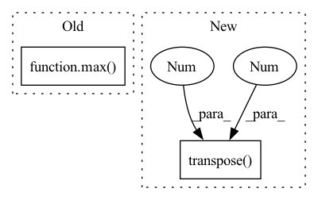

Pattern ID :5516

Before Change
ratio = estimated_sources_amplitude / estimated_sources_amplitude.sum(dim=0)
estimated_sources = ratio * mixture
norm = max(1, torch.abs(mixture).max() / 10)
mixture, estimated_sources = mixture / norm, estimated_sources / norm
estimated_sources = update_em(mixture, estimated_sources, iterations, eps=eps)
estimated_sources = norm * estimated_sources
After Change
mixture = mixture.detach().cpu().numpy()
estimated_amplitude = estimated_amplitude.detach().cpu().numpy()
mixture = mixture.transpose(2, 1, 0)
estimated_amplitude = estimated_amplitude.transpose(3, 2, 1, 0)
estimated_sources = norbert.wiener(estimated_amplitude, mixture, eps=eps)
estimated_sources = estimated_sources.transpose(3, 2, 1, 0)
estimated_sources = torch.from_numpy(estimated_sources).to(device, dtype)
In pattern: SUPERPATTERN
Frequency: 3
Non-data size: 2
Instances
Fragment ID: 19383847
Project Name: tky823/dnn-based_source_separation
Commit Name: 11a2e82888f76547df72eff58c6a592e3473e65c
Time: 2021-08-20
Author: 40362510+tky823@users.noreply.github.com
File Name: egs/musdb18/d3net/src/adhoc_driver.py
M Class Name: AnonimousClass
N Class Name: AnonimousClass
M Method Name: apply_multichannel_wiener_filter(4)
N Method Name: apply_multichannel_wiener_filter(5)
M Parent Class:
N Parent Class:
M File Name: egs/musdb18/d3net/src/adhoc_driver.py
N File Name: egs/musdb18/d3net/src/adhoc_driver.py
M Start Line: 383
M End Line: 401
N Start Line: 397
N End Line: 413
'>
Before Change
edge_mask[idx, max(0, box[1] - 1): min(box[1] + 1, box[3]), box[0]: box[2] + 1] = True
edge_mask[idx, max(box[1] + 1, box[3]): min(output_shape[1], box[3] + 2), box[0]: box[2] + 1] = True
// fill the 2 horizontal edges
edge_mask[idx, box[1]: box[3] + 1, max(0, box[0] - 1): min(box[0] + 1, box[2])] = True
edge_mask[idx, box[1]: box[3] + 1, max(box[0] + 1, box[2]): min(output_shape[2], box[2] + 2)] = True
return seg_target, seg_mask, edge_mask
After Change
if not is_tf_available():
seg_target = seg_target.transpose(0, 3, 1, 2)
seg_mask = seg_mask.transpose(0, 3, 1, 2)
edge_mask = edge_mask.transpose(0, 3, 1, 2)
return seg_target, seg_mask, edge_mask
'>
Fragment ID: 19383855
Project Name: mindee/doctr
Commit Name: b452bc3a8dc222284477b71d1e8eb3c76c5e2d12
Time: 2021-12-02
Author: 76527547+fg-mindee@users.noreply.github.com
File Name: doctr/models/detection/linknet/base.py
M Class Name: _LinkNet
N Class Name: _LinkNet
M Method Name: build_target(3)
N Method Name: build_target(3)
M Parent Class: BaseModel
N Parent Class: BaseModel
M File Name: doctr/models/detection/linknet/base.py
N File Name: doctr/models/detection/linknet/base.py
M Start Line: 135
M End Line: 163
N Start Line: 120
N End Line: 177
'>
Before Change
melspecs, texts, input_lengths, label_lengths = zip(*data)
max_inp_len = max(input_lengths)
max_label_len = max(label_lengths)
n_mels = melspecs[0].shape[0]
features = torch.zeros((len(data), n_mels, max_inp_len))
After Change
specs = [torch.transpose(spec, 0, 1) for spec in melspecs]
specs = pad_sequence(specs, batch_first=True)
specs = torch.transpose(specs, 1, 2)
labels = pad_sequence(texts, batch_first=True)
return specs, labels, torch.tensor(input_lengths), torch.tensor(label_lengths)
'>
Fragment ID: 19383886
Project Name: ivankunyankin/quartznet-asr
Commit Name: f5499846f8525773be9824471b65f109603eed5c
Time: 2021-07-03
Author: IKunyankin@gmail.com
File Name: utils.py
M Class Name: AnonimousClass
N Class Name: AnonimousClass
M Method Name: custom_collate(1)
N Method Name: custom_collate(1)
M Parent Class:
N Parent Class:
M File Name: utils.py
N File Name: utils.py
M Start Line: 85
M End Line: 98
N Start Line: 88
N End Line: 94